k-Day 129｜東東
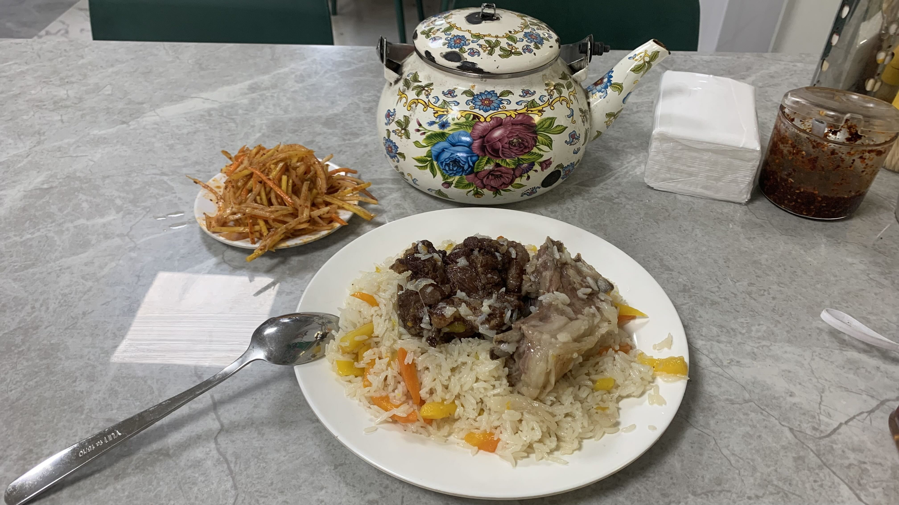
根據老闆建議，早上出發前到休息站外的餐廳吃新疆特色抓飯。鹹味裹上油的米飯伴著蘿蔔和地瓜條，兩塊肉一肥一瘦。瘦的那塊有點柴，肥的相當軟嫩，一下就吃光。整體來說調味有點重，吃不出肉和食材本身的香味。
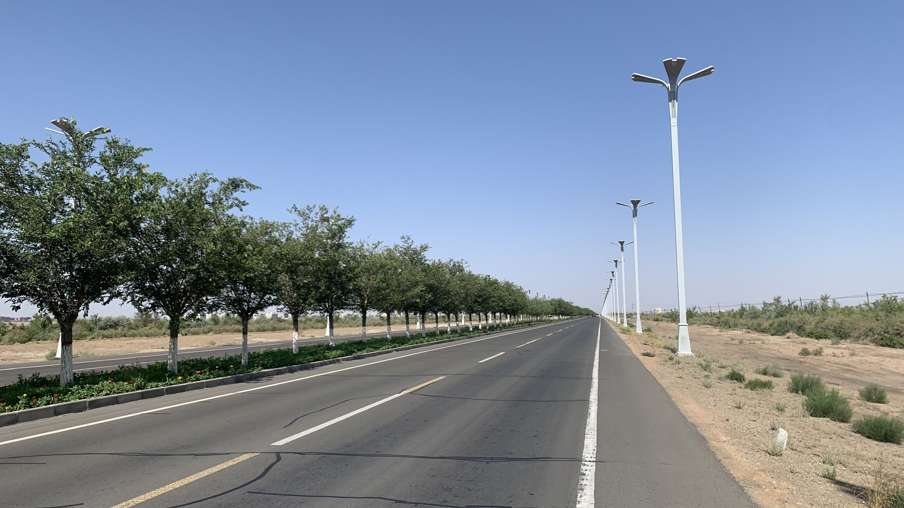
今天真的很熱了，十一點左右抵達五彩灣，城市周遭種了行道樹，畢竟是新市鎮，樹還沒長大到足以遮蔭的高度。
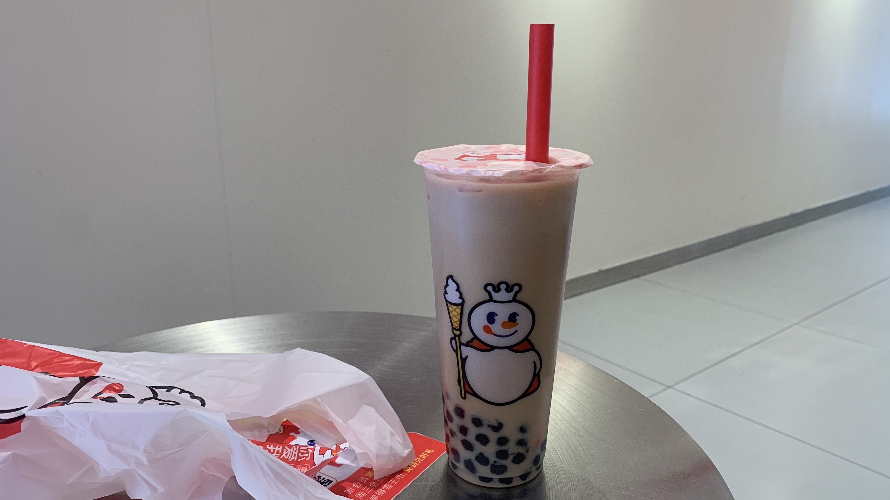
拐進市區道路，看到一間蜜雪冰城，立刻進門點一杯珍珠奶茶坐下吹冷氣。
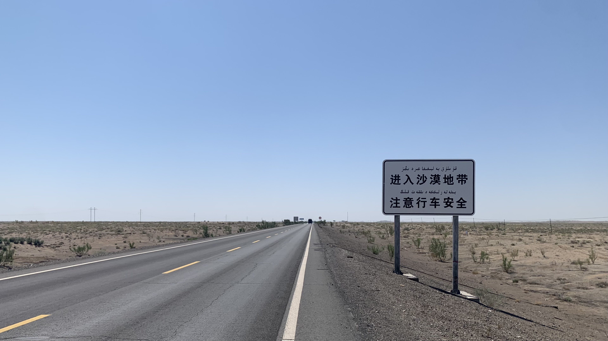
中午出發時整輛車都在發燙。路邊出現「進入沙漠地帶 注意行車安全」的路標，沙漠路段會有怎樣的安全隱患呢？
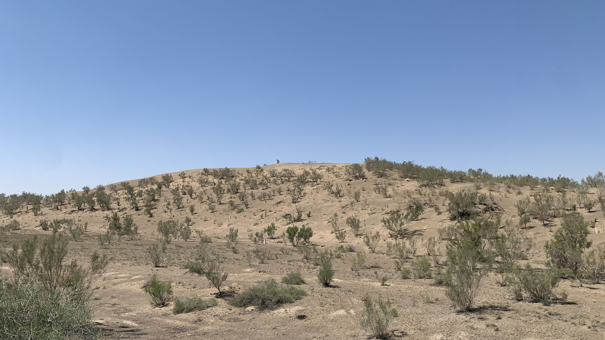
大概是中暑吧。此處的沙漠是確實的黃色細砂，綠色的植物感覺是刻意種上去防風的。約莫十年前在洗浴中心的電視上看過習近平到內蒙視察治沙，被一群村民孩童簇擁的畫面，經過這些年也許終於長出這些樹。
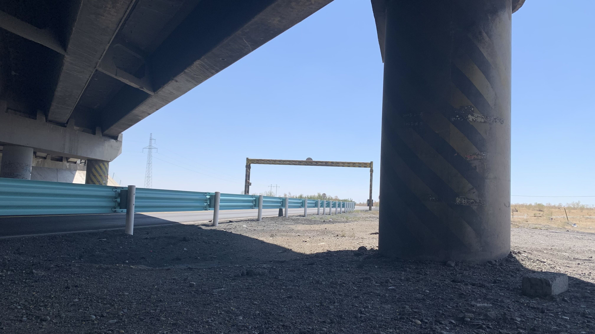
太熱了，整個早上連一根路燈的陰影都沒有。經過一座橋下，拉出睡墊就躺在橋墩旁躲太陽。
蒼蠅有點多，但是外面沒有陰影的路面不斷吹來熱風，在這裡躺到四點吧。
下午四點，溫度還在上升，太陽、柏油和沙漠同步放熱，天空一片雲也沒有。路上卡車頗多，已經沒有路肩，騎著有點危險。今晚預計到四十公里外的加油站補給，晚上就在附近找塊空地睡覺。
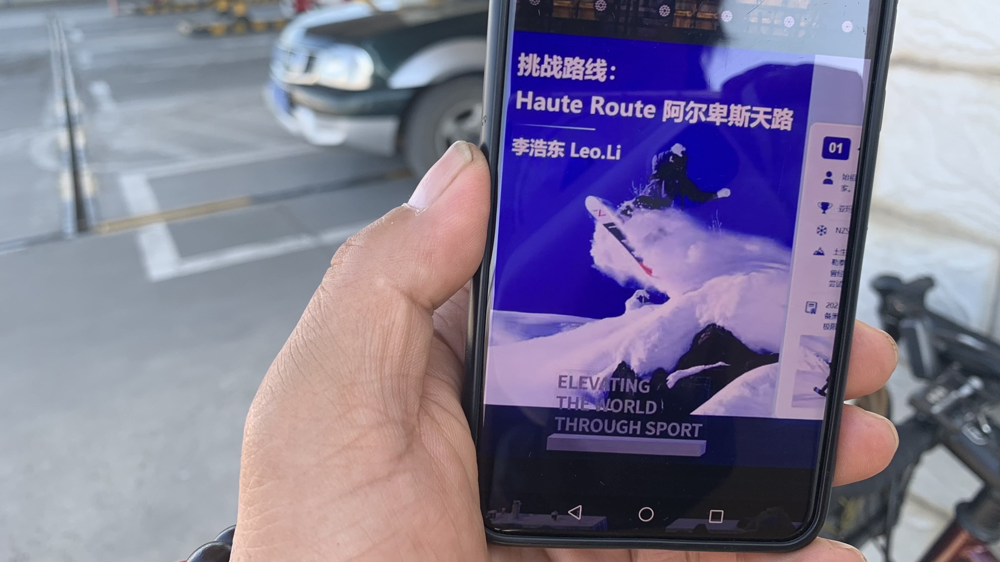
約莫六點抵達加油站，買了一瓶一公升番茄汁和烏龍茶，坐在陰影下一口氣喝光。這時走來一位大叔，先是問我從哪裡過來，要騎到哪裡。聽完後走進加油站超市，手上拿著一公升番茄汁說：「這個請你喝。」
太貼心了啊！還觀察到我喝的是番茄汁！
大叔沒有自我介紹，只是立刻掏出手機給我看兒子的簡報。據說兒子參加了公司全國大會，發表了到阿爾卑斯山滑雪的挑戰項目，獲得北區第一名的樣子。
「我也沒什麼運動天份，他就很厲害。」大叔看著手機裡兒子傳來的照片驕傲地說完，又抬頭看著我問：「我們一起拍張照片吧。」拍完立刻打開兒子的微信，點了語音說：「東東，我們在加油站遇到，他從日本騎自行車到這，騎了四個多月。」
說完後沒等我說聲謝謝，就匆匆上車跟同事離開。
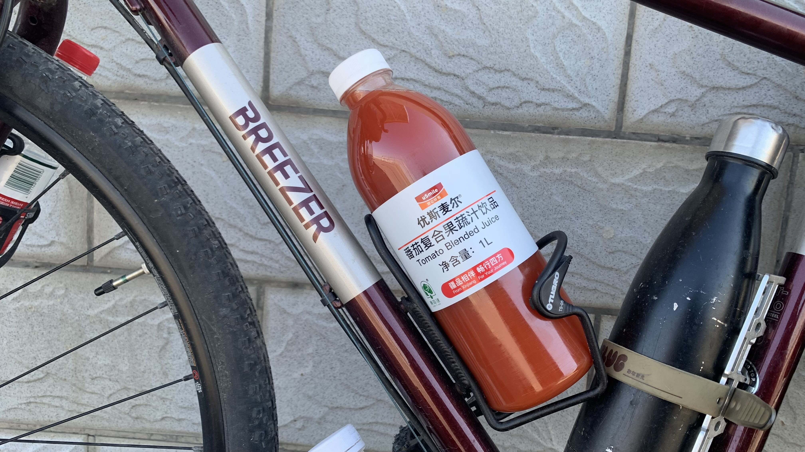
東東啊，要是你看到這篇日誌，請代我向你爸表示謝意。你的滑雪挑戰超酷。
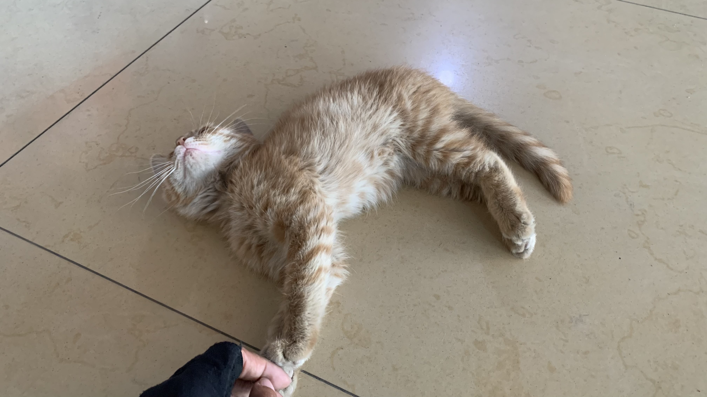
問了加油站員工晚上可否在外面搭帳篷，獲得許可了。天黑前就坐在商店裡吹冷氣，裡面有隻不怕生的橘貓，摸兩下就翻肚子。
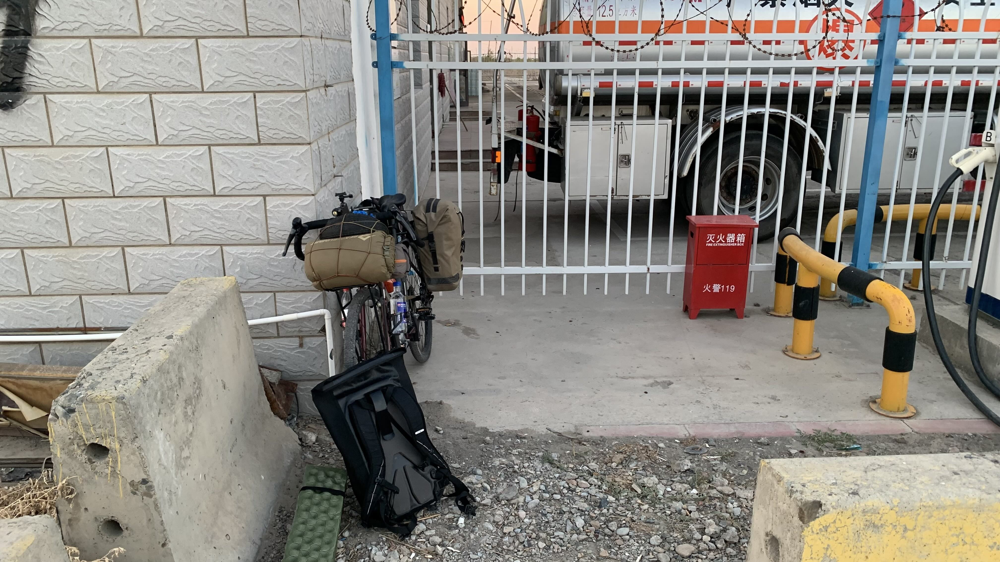
晚上九點半，推著二十三號走到柵欄外的充電車區，找了個角落搭起帳篷。
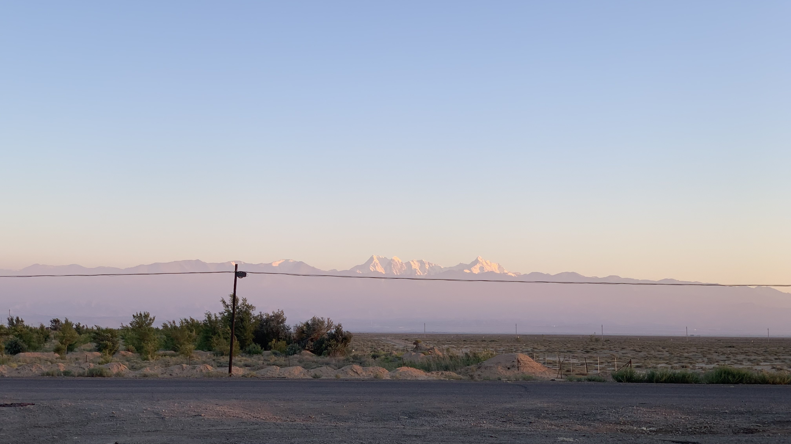
抬頭一看，這個加油站竟然就能看到積雪的天山山脈啊。
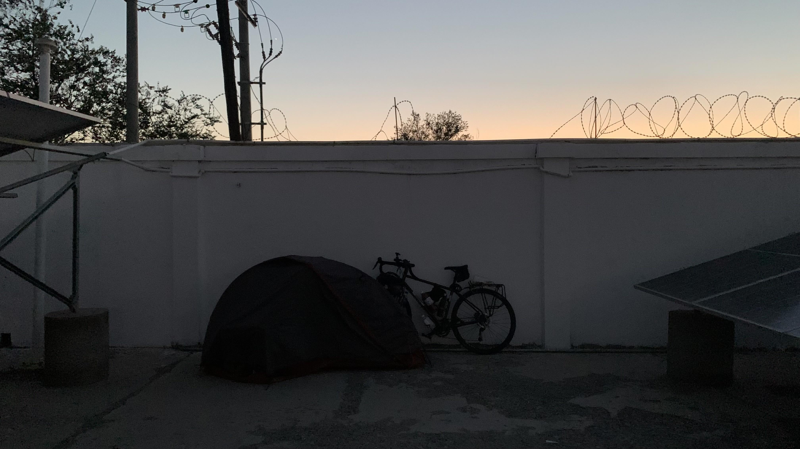
是這樣的，加油站經理發現我睡在角落。出來和我說這裡的車很危險，要我到加油站後院睡覺。剛才的員工也走過來，問我：「你不怕嗎？我看了都為你感到害怕。」
本以為新疆的加油站戒備森嚴，圍欄鐵網加上警衛，進出加油還要刷身分證，沒想到還有這樣的善舉。
今日花費： 抓飯 30、飲料 8、飲料 19.5、晚餐 29.5元